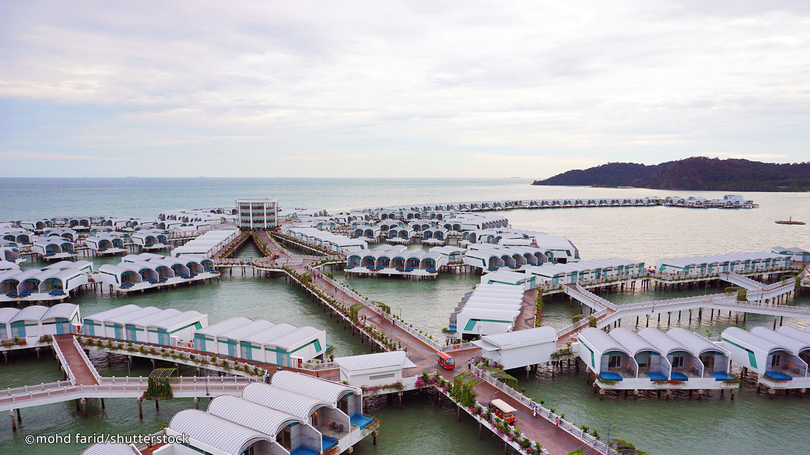
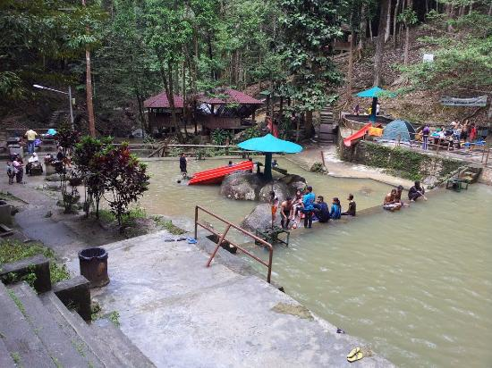
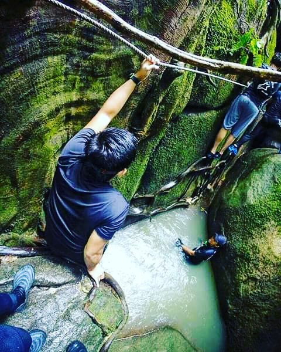
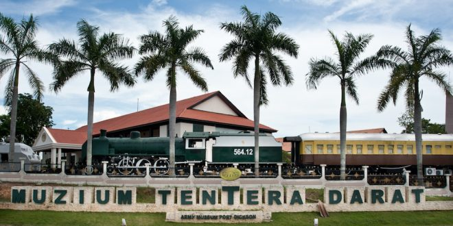
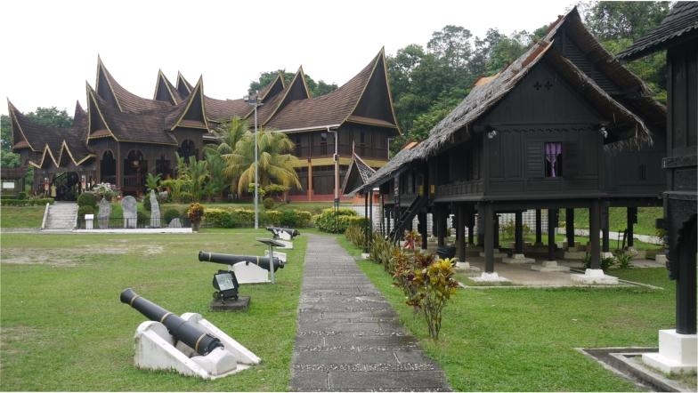

Negeri Sembilan (or Nine State in Bahasa) refers to the nine counties sandwiched between Selangor and Pahang that form the small state. Few international travellers visit this state in Malaysia and those who do head to Port Dickson. Port Dickson, a small seaside town that’s an hour’s drive from KL, attracts mostly Malaysian tourists. While it lacks Langkawi-style beaches, the resort town gives easy access to the coast. The state capital Seremban provides a smattering of culture—unravel Negeri Sembilan’s history at the State Museum and visit the local art complex.

Port Dickson
Port Dickson is a town on Malaysia’s west coast, south of Kuala Lumpur. Beaches dot the coastline running south toward Tanjung Tuan, a wildlife reserve and birdwatching spot with a 16th-century lighthouse. East of the reserve is Fort Kempas, with a 14th- or 15th-century sacred Islamic tomb and several megaliths. Lukut Museum, northeast of Port Dickson, has exhibits about the area’s history from the early 1800s.

Jeram Toi
Address: 86, 71600 Kuala Klawang, Negeri Sembilan

Hutan Lipur Gua Batu Maloi
Address: Pejabat Hutan Negeri Sembilan, Negeri Sembilan, 73100 Johol

Army Museum Port Dickson
Museum with historical exhibits, a subterranean tunnel & army vehicles, plus a memorial fountain.
Address: Kem, Persiaran Pahlawan, Kampung Baru Sirusa, 71050 Port Dickson, Negeri Sembilan

Negeri Sembilan Minangkabau State Museum/Complex Centre
Address: Jalan Sungai Ujong, Lebuhraya Seremban - Bukit Nenas, 70200 Seremban, Negeri Sembilan